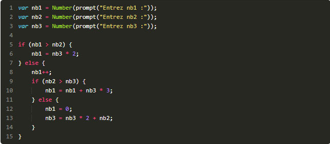

Ecrivez un programme jour_suivant.js qui fait saisir un nom de jour à l'utilisateur, puis affiche le nom du jour suivant. Les erreurs de saisie (jour incorrect) doivent être gérées.
VoirEcrivez un programme comparaison.js qui fait saisir deux nombres puis compare leurs valeurs et affiche un message approprié.
VoirEcrivez un programme baccalaureat.js qui fait saisir la moyenne d'un candidat puis affiche si ce candidat est recalé (moyenne inférieure à 10), reçu (moyenne entre 10 et 12) ou reçu avec mention (moyenne supérieure ou égale à 12).
VoirExaminez le programme valeurs.js ci-dessous
Avant de l'exécuter, tentez de prévoir les valeurs finales des variablesnb1,nb2 etnb3 en fonction de leurs valeurs initiales et complétez le tableau ci-dessous.
Ecrivez un programme nombre_jours.js qui fait saisir le numéro d'un mois (nombre entre 1 et 12) puis affiche le nombre de jours de ce mois. On ne tiendra pas compte des années bissextiles. Les erreurs de saisie doivent être gérées.
VoirEcrivez un programme qui demande une heure à un utilisateur sous la forme de trois informations (heures, minutes, secondes). il affiche ensuite l'heure qu'il sera une seconde plus tard. Les erreurs de saisie doivent être gérées.
VoirEcrivez un programme manege.js qui fait faire 10 tours de manège en affichant un message à chaque tour.
Voir